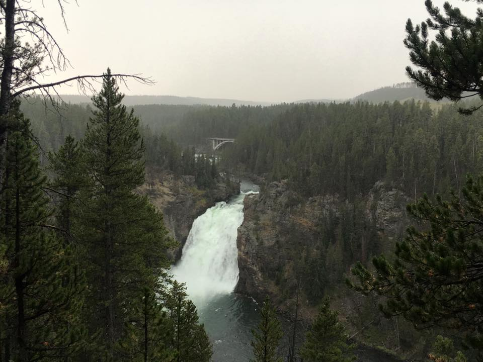
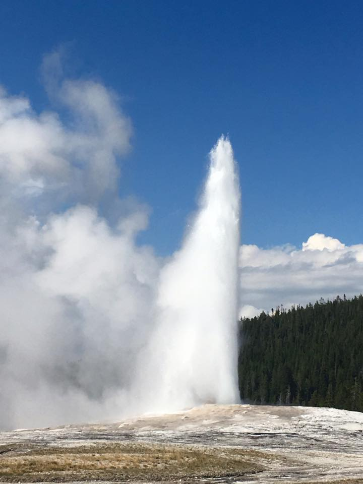
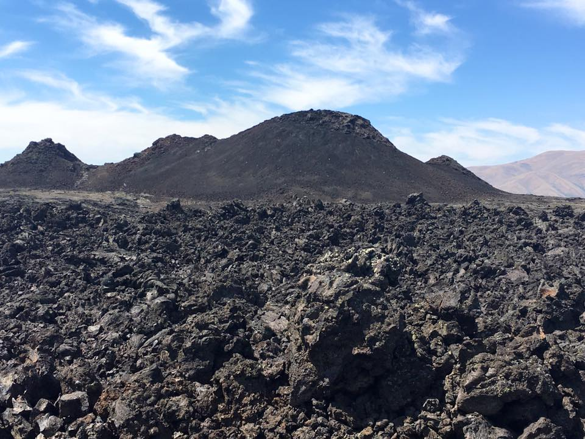
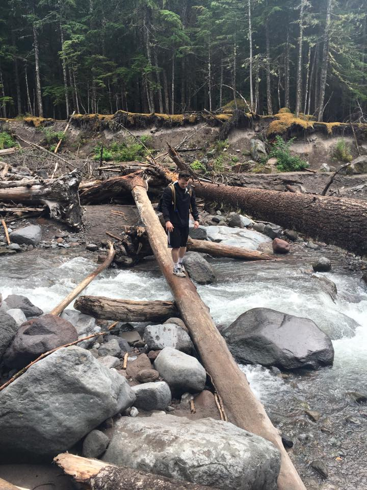
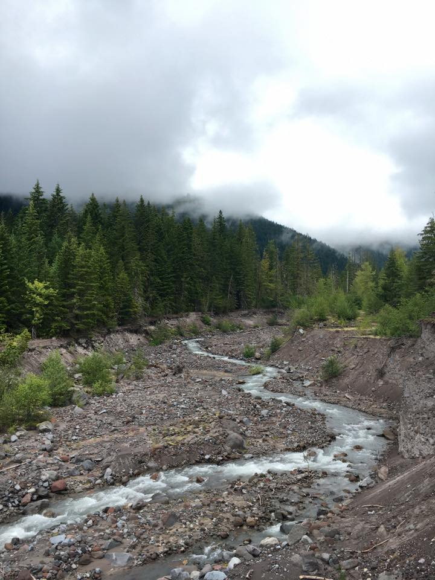

The second main part of our trip was the amazing parks we saw up north. The Grand Tetons were both beautiful and ominous, and we saw lots of wildlife such as buffalo and even a black bear in the distance (though we didn't get a picture of him)

Yellowstone was amazing but very crowded. All its hot springs and geysers were very unique, but they smelled disgusting. Really cool waterfalls and amazing terrain though.
 After Yellowstone it was Craters of the Moon. Astronauts used to train at this old volcano site before space missions.
We also did an amazing hike around Mount Hood. It was very hazy so we didn't see the peak, but we felt like we were in the movie "The Revenant"
 